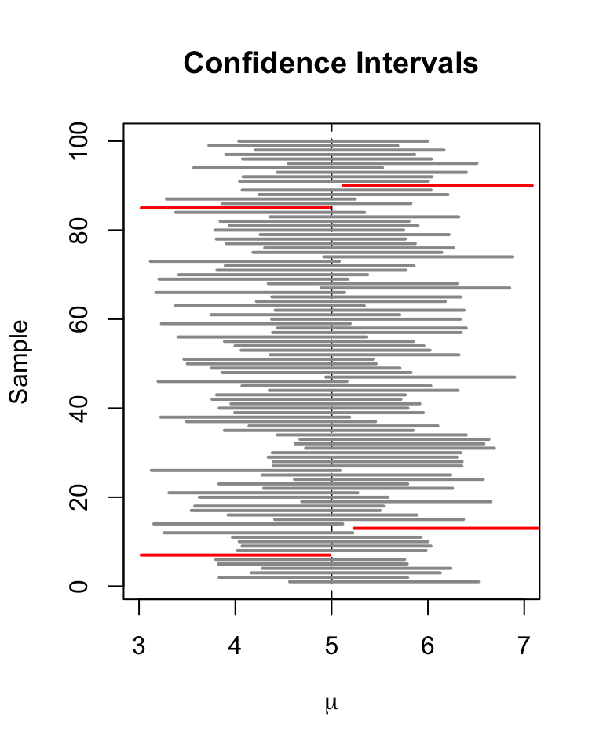

Sampling distributions and uncertainty
NRES 710
Last compiled: 2024-07-12
Download the R code for this lecture!
To follow along with the R-based lessons and demos, right (or command) click on this link and save the script to your working directory
Statistics: inference from a sample

Consider the following example involving Yellow-legged Frogs (Rana boylii):
Population: all Yellow-legged Frogs in ponds in the
central Sierra Nevada
Parameter: mean body size (snout-vent length; SVL) of
adults in all ponds in the central Sierra Nevada
Sample: as many frogs as possible are captured and
measured in 10 ponds randomly sampled from the central Sierra
Nevada
Statistic: sample mean

The goal of statistics is to learn something meaningful about a population from a sample. In the Yellow-legged Frog example above, there is a ‘true’ mean body size of frogs in ponds in the central Sierra Nevada. We just don’t know what it is – and we never will be able to. But we can use data from a sample of the population and statistics to estimate what that parameter is – an approximation of truth.
After collecting data from a sample, statistics will help us to say something about the mean body size in the population – both about what we know AND what we don’t know about the population!
First of all, we assume that the summary statistic computed from our sample (n >> 1) is representative of the population. How? Why? Because of the Central Limit Theorem.
The Central Limit Theorem
The Central Limit Theorem (CLT) says that if you have a sample with a reasonably large number of observations (the larger, the better!), and each observation is independently sampled from the population, then the statistics we compute from the sample (e.g., the sample mean) should be representative of the population – and reflective of the parameter of interest.
For the Yellow-legged Frog example: our sample mean should be representative of the mean of ALL Yellow-legged Frogs in the central Sierra Nevada.
And as the sample size gets bigger, the sample mean will become more representative of the true mean. It will converge on the true mean as sample size approaches infinity.
This is the concept of regression to the mean and is a natural consequence of the Central Limit Theorem!
[In-class R demo: regression to the mean]
The CLT is the magic wand of statistics. It does enormous amounts of work for us. Why?
The CLT also implies that the sampling distribution (distribution of hypothetical samples collected from repeated sampling) for the sample mean (and many other summary statistics) will be approximately normally distributed – even if the underlying data themselves are NOT normally distributed.
Did you ever wonder why the normal (Gaussian) distribution is so common in statistics? It’s because of the CLT- many summary statistics derived from a sample are expected to have a sampling distribution that is approximately normally distributed (based on the CLT)!

Example
How does this work? Let’s use the Yellow-legged Frog example.
Let’s say that we could measure ALL the frogs in ALL the ponds in California. What would that look like?
Let’s simulate it using a log-normal distribution that is strongly right skewed (positively skewed), suggesting that there are a lot of frogs out there that are relatively small-bodied, but also a few that are giants! Note: this is not necessarily biologically realistic, but it makes a point.
First, let’s set the population’s parameter – the truth about which we hope to make inference, but can never know in reality.
###### Yellow-legged Frog example ---------------------
set.seed(43) # set random number generator at the same place on all computers
# All frogs in California -- the statistical population of all frogs!
frogs.size <- rlnorm(10000, 1.5, 0.4) # statistical 'population'
hist(frogs.size, main = "", xlab = "SVL (mm)") # plot out histogram
truemean_SVL <- mean(frogs.size) # the 'parameter'
truemean_SVL ## [1] 4.873615Now let’s take a sample!
mysample <- sample(frogs.size, 10) # take sample of size 10 (10 frogs measured)
mean(mysample) # compute the sample mean## [1] 4.887449And another, this time with n = 20
mysample <- sample(frogs.size, 20) # take sample of size 20 (20 frogs measured)
mean(mysample) # compute the sample mean## [1] 5.028765Since sampling is random, sampling will produce a different result every time.
To get a better picture of the sampling variance, let’s sample many times!
lotsofsamples <- list()
n <- 30 # take sample of size of 30; 30 frogs measured
for(s in 1:5000){
lotsofsamples[[paste0("sample",s)]] <- sample(frogs.size, n)
}
lotsofsamples$sample1## [1] 4.875064 4.018483 5.580163 4.648188 4.629791 10.890322 9.505540
## [8] 5.681832 2.927050 4.976285 2.857036 9.525738 2.194134 2.880125
## [15] 3.576239 2.759818 3.045816 2.929300 5.282259 5.473396 3.571310
## [22] 9.689851 6.600840 5.290024 2.948086 11.144264 2.771986 5.023500
## [29] 2.391615 5.737500lotsofsamples$sample99## [1] 4.874085 7.368764 2.176366 3.812595 3.234573 5.343920 2.997941
## [8] 5.891479 5.782466 11.460109 11.157973 3.577184 4.778849 3.483923
## [15] 2.647834 4.066589 5.297317 4.194658 3.719712 4.621243 4.615239
## [22] 2.633229 3.890737 7.333891 2.601429 3.927767 3.270146 4.962061
## [29] 3.059009 6.037333lotsofsamples$sample732## [1] 6.558714 3.960118 4.629648 6.943371 6.144790 3.948512 2.769419
## [8] 4.106447 6.651357 6.524551 6.674595 5.135330 4.583658 3.332828
## [15] 5.716270 2.647834 7.763689 11.567883 3.234573 4.096441 4.744484
## [22] 4.578969 4.303312 5.810096 7.260285 5.124768 4.549220 6.485413
## [29] 4.277223 5.359057Now we can compute the sample means and the sampling variance for the summary statistic (mean body size)
samplemeans <- sapply(lotsofsamples, mean)
hist(samplemeans, xlab = "Mean body size (n = 30)") # visualize the sampling distribution!
Interesting… Does this look skewed to you? Or does it look like a normal distribution??
It’s the CLT at work!!
Of all the samples you could get, there are very few that are all at one end of the distribution. There are a lot more possible random samples that span the full distribution of values, from low to high. Take the average of all those values, low and high, and you get something in the middle. The normal distribution is humped right in the middle, because of the tendency for low and high observations to ‘average out’ when measuring the mean within a sample.
Coin flipping example
Here’s the sampling distribution for the number of heads out of a single coin flip (either 0 or 1!):
barplot(table(rbinom(10000, 1, 0.5))/10000,
xlab = "N heads out of 1", ylab = "Probability")
Now let’s build up sample size and see how the sampling distribution changes.
par(mfrow=c(3,2))
for(i in seq(2,12,2)){
barplot(table(rbinom(10000, i, 0.5))/10000,
xlab = sprintf("N heads out of %s", i),
ylab = "Probability",
main = paste0("sample size = ", i))
#hist(rbinom(10000,i,.5),main=paste0("sample size = ",i),xlab=sprintf("N heads out of %s",i))
}
And with really big sample size:
hist(rbinom(10000, 1000, 0.5), xlab = "N heads out of 1000", freq = F, main = "")
The larger the sample size, the more closely the sampling distribution (number of heads out of N flips of a fair coin) looks like a normal distribution! Again, the CLT at work!
Sampling distributions in null hypothesis testing
Pretty much all of classical null hypothesis testing (NHT) works like this:
- We compute a summary statistic from our data. This
statistic represents the “signal” in your data.
- Using the known (theoretical) sampling distribution for our summary statistic under the null hypothesis (worked out by statisticians!), we inquire whether or not our summary statistic (signal) could have been a result of random sampling error under the null hypothesis. We ask: what is the probability of our data or more extreme data, given that the null hypothesis is true?
- If it is implausible that random noise could have produced our result (if \(p\le\alpha\)), then we reject the null hypothesis. Otherwise, we fail to reject the null…
Commonly-used sampling distributions include:
- t-distribution: sampling distribution for the
t-statistic under the null hypothesis
- z-distribution: standard normal sampling
distribution centerd on 0 with \(\sigma\) = 1
- Chi-squared (\(\chi^2\))
distribution: sampling distribution for the Chi-squared
statistic under the null hypothesis
- F-distribution: sampling distribution for the F statistic under the null hypothesis; used in ANOVA and regression
Sampling distributions are thought experiments! What would our test statistic look like under repeated sampling from a population (e.g., under the null hypothesis)?
Summary metrics (calculated from sample data)
We often summarize our samples by their centers (e.g., average) and their spread (dispersion). These informative data summaries are useful on their own, and are also used to compute statistics like the t- or F-statistics.
“Center” statistics: means, medians, geometric mean
Sample Mean (arithmetic mean) = sum of all sampled values divided by the sample size.
Sample Median (midway point) = 50% quantile. Order the values from low to high and select the value at the center.
Sample Geometric mean: product of n numbers taken to the n-th root. For two numbers (3 and 4), you’d have: \(\sqrt{3 * 4} = (3 * 4)^{1/2} = 3.46\). For three numbers (3, 5, and 6), you’d have: \(\sqrt[3]{3 * 5 * 6} = (3 * 5 * 6)^{1/3} = 4.48\).
Data spread / dispersion:
Standard deviations (\(\sigma\)) and variances (\(sigma^{2}\)) are calculated differently depending on whether we are computing these quantities for an entire population of interest or a sample drawn from the larger population!
Standard deviation (sigma; \(\sigma\)) – for the entire population
Standard deviation (s) – for a sample of the population
Variance (\(\sigma^2\)) – for population variance
Variance (\(s^2\)) – for the sample variance
The variance provides a measure the average squared difference from the mean – or, in other words, how much the values in a dataset differ from the mean. It describes the spread of your data in either direction from the mean. The standard deviation represents the square root of the variance.
Standard deviation is much more commonly reported than variance because it is in the same units/scale as the original measurements.
Coefficient of Variation (CV) is the standard deviation represented as a fraction of the mean and is often expressed as a percentage. It can be calculated using: \(CV = (\frac{SD}{\mu}) * 100\)
Calculating variance and standard deviation – an example
For a population: \(\sigma = \sqrt{\sum_{n=1}^{i}{\frac{(x_i-\mu)^2}{N}}}\)
For example: compute the variance of 5 numbers: 4, 3, 5, 5, 2
\(\mu = (4+3+5+5+2)/5 = 3.8\)
(4 - 3.8)^2 = 0.04
(3 - 3.8)^2 = 0.64
(5 - 3.8)^2 = 1.44
(5 - 3.8)^2 = 1.44
(2 - 3.8)^2 = 3.24
Sum these = 6.8
Divide by 5 = population variance = 6.8/5 = 1.36
Take square root = \(\sigma\) =
1.17
To estimate population variance from a sample: \(s = \sqrt{\sum_{n=1}^{i}{\frac{(x_i-\bar{x})^2}{(N-1)}}}\)
\(\bar{x} = (4+3+5+5+2)/5 = 3.8\)
(4 - 3.8)^2 = 0.2^2 = 0.04
(3 - 3.8)^2 = 0.64
(5 - 3.8)^2 = 1.44
(5 - 3.8)^2 = 1.44
(2 - 3.8)^2 = 3.24
Sum these = 6.8
Divide by 4 = sample variance = 6.8/4 = 1.7
Take square root = \(s\) = 1.30
So the population SD is 1.36, whereas the sample SD is 1.7.
Aside: degrees of freedom
OK, so why are there different estimates of dispersion for population vs. sample?
Which is larger? Which are we less confident in?
This has to do with a concept called degrees of freedom.
Sigma can be computed with 100% accuracy. Since you have the entire population measured, you can compute a measure of dispersion for the population and that measure is perfect. It is not an estimate.
The sample standard deviation \(s\), on the other hand, is an imperfect estimate of dispersion from a sample of a much larger population! In fact, if we used the population formula for a sample, it would underestimate the dispersion of the target population.
The reason for this is that the formula for sample SD uses the sample mean, not the population mean. In fact, the same sample data were used to compute the sample mean! If you know the values of four of the five sampled values AND we know that the sample mean, we know what the value of the final observation must be. Therefore, even though we have 5 data points, we have only 4 degrees of freedom if the sample mean is included in our formula. In this case, we have four independent pieces of information that we can use for computing standard deviation (we ‘spent’ one degree of freedom already to compute the sample mean!).
By dividing the sum of squared deviations from the sample mean by 4 instead of 5, we are unbiasing the estimate of dispersion to account for the fact that we are using the sample data twice – once for computing the mean, next for computing the standard deviation!
Sampling distributions
Statisticians worked out the sampling distributions for some common summary statistics. These are often called the sampling variance – not to be confused with the ‘sample variance’ we discussed above!
Standard error of the mean
Standard error (SE) of the mean = sample standard deviation divided by the square root of the sample size
\(SE = \frac{s}{\sqrt{N}}\)
The standard error of the mean is used to help us describe the sampling distribution for the sample mean (the expected distribution of sample means if you collected thousands of new samples and computed the mean).
# Survey of common sampling distributions -----------------
# Sampling distribution: the sample mean
mysample <- c(4.1, 3.5, 3.7, 6.6, 8.0, 5.4, 7.3, 4.4)
mysample## [1] 4.1 3.5 3.7 6.6 8.0 5.4 7.3 4.4n <- length(mysample) # sample size
sample.mean <- mean(mysample) # sample mean
sample.stdev <- sd(mysample) # sample standard deviation
# Note: R calculates sample standard deviation (s) using the denominator of n-1 by default!
std.error <- sample.stdev / sqrt(n)
std.error ## [1] 0.6122995Now we have all the information we need to compute the sampling distribution for the sample mean.
Our sample mean is 5.375. But if we collected different samples of size n = 8, we would get different values – even if the true population mean was 5.375. What does this distribution of values look like?
sampdist <- function(x){dt((x - sample.mean) / std.error, n - 1)}
curve(sampdist, 0, 11, ylab = "Probability density", xlab = "Value", main = "Sampling distribution for the sample mean!")
abline(v = sample.mean, col="green", lwd=3)
confint <- c(sample.mean + std.error * qt(0.025, n - 1), sample.mean + std.error * qt(0.975, n - 1))
abline(v = confint, col = "blue", lty = 2)
The vertical blue lines indicate the 95% confidence interval around the mean. The confidence interval helps us visualize what might happen if we repeated our sampling over and over and over – how might our result change?
Note the use of the t-distribution in the above code block [‘qt()’]. The t-distribution is a theoretical sampling distribution representing sampling error in units of standard error.
Confidence intervals
Confidence intervals, like p-values, are commonly misinterpreted!
In classical frequentist statistics, the population parameter of interest is fixed – there is no uncertainty associated with the population parameter itself – it’s just that we can only collect and assess a small sample from the much larger population. So it does not make sense to say something like “the true parameter has a 95% chance of falling within the confidence interval”. The true parameter is either in the interval or it is not in the interval. It would be better to say something like: “95% of confidence intervals generated from different random samples would contain the true parameter”.

Unfortunately, we have no idea if our particular confidence interval is one that includes the true parameter – or is one that does not!!
Don’t worry if you find this difficult – everyone does! And practically speaking, just about everyone interprets a 95% confidence interval as having a 95% probability of including the true parameter – and it doesn’t really matter that much!
Probability distributions – the basics, and how to use them in R
Discrete vs. continuous
In discrete distributions, each outcome (a value that could be sampled under this probability distribution) has a specific probability mass (like the probability of flipping a coin 10 times and getting 4 heads).
For example, let’s consider the Poisson distribution. The Poisson distribution is a discrete probability distribution that describes the probability of a given number of events occurring within a fixed interval of time or space. Events must occur independently of each other and at a constant average rate.
A Poisson-distributed variable might be the number of incoming calls about class registrations that the student advising center might get every hour. Number of phone calls per hour. Let’s look at an example:
# Probability distributions ---------------------
# Discrete probability distributions
# E.g., the Poisson distribution
mean <- 5
rpois(10, mean) # rpois(): randomly draw 10 whole numbers with a mean = 5 from the Poisson distribution## [1] 5 8 6 3 5 4 5 5 5 7 # note: the random numbers sampled from this distribution have no decimal component
# plot discrete probabilities of getting particular outcomes!
xvals <- seq(from = 0, to = 15, by = 1)
probs <- dpois(xvals, lambda = mean) # dpois(): density generation for the Poisson distribution
names(probs) <- xvals
barplot(probs, ylab = "Probability Mass", main = "Poisson distribution (discrete)")
barplot(cumsum(probs),ylab="Cumulative Probability",main="Poisson distribution (discrete)") # cumulative distribution
sum(probs) # just to make sure it sums to 1! Does it???## [1] 0.999931In continuous distributions, each possible value/quantity that could be randomly sampled is associated with a probability density, \(f(x)\), not probability mass \(Prob(x)\). This is because the probability of getting any particular value in a continuous distribution is effectively zero. This arises from the problem of precision. The sum of the probability distribution must be 1 (there is only 100% of probability to go around). In a continuous distribution, there are an infinite number of possible values of x. So any individual probability is always divided by infinity, which makes it zero. Therefore, we have to talk about probability density, unless we want to specify a particular range of values. For example, we can’t calculate \(Prob(x = 5)\), but we can calculate \(Prob(4 < x < 6)\) or \(Prob(x > 5)\). The probability density is defined as the probability of getting a value within an infinitesimally small range of a particular value, divided by that infinitesimally small interval. No worries if you don’t understand that – you can just think of probability density as the relative likelihood of sampling one value versus another. Let’s consider the beta distribution:
# Define the shape parameters for the Beta distribution
shape1 <- 0.5
shape2 <- 0.5
# Generate 10 random numbers from the Beta distribution
random_numbers <- rbeta(10, shape1, shape2)
print(random_numbers)## [1] 0.92647257 0.10067334 0.82929881 0.18965752 0.03830878 0.96788410
## [7] 0.65296164 0.97855065 0.99910244 0.47124495# Plot the probability density function (PDF) of the Beta distribution
curve(dbeta(x, shape1, shape2), from = 0, to = 1, ylab = "Probability Density", xlab = "x", main = "Beta Distribution PDF")
# Plot the cumulative distribution function (CDF) of the Beta distribution
curve(pbeta(x, shape1, shape2), from = 0, to = 1, ylab = "Cumulative Probability", xlab = "x", main = "Beta Distribution CDF")
# Verify that the PDF integrates to 1 over the interval [0, 1]
integral <- integrate(f = dbeta, lower = 0, upper = 1, shape1 = shape1, shape2 = shape2)
print(integral$value) # Should be approximately 1## [1] 1Probability distributions in R
Random number generators
Random number generators are functions for generating random values from a specified probability distribution. Functions include ‘rnorm()’, ‘rpois()’, and ‘rt()’, among others.
## random number generators
rnorm(10) # generate 10 random numbers from a standard normal distribution## [1] -0.16960574 0.18253169 1.38754707 -0.07356083 -0.53048611 1.56180944
## [7] -0.91811210 -0.30787558 -1.80366163 1.07314253rnorm(5, 25, 5) # generate 5 random numbers from a normal distribution with mean=25 and sd=5## [1] 25.68661 29.94944 31.17944 21.30875 31.21870rpois(8, 18) # generate 8 random numbers from a poisson distribution with mean=18## [1] 21 17 11 12 18 21 24 21Probability density functions
Continuous distributions are associated with PDFs, or probability density functions; e.g., ‘dnorm()’, ‘dt()’, ‘dgamma()’. These functions give you the probability density (relative probability) of any particular value/quantity that could be randomly sampled under this distribution.
## probability density function example
curve(dt(x, 8), -4, 4, xlab = "Possibilities", ylab = 'Relative probability (probability density)')
Probability mass functions
For discrete distributions, PMFs - Probability mass functions – e.g., ‘dpois()’, ‘dbinom()’ – give you the exact probability of obtaining any particular value that could be sampled under this distribution.
## probability mass function example
x <- barplot(sapply(0:10, function(t) dpois(t, 2)), xlab = "Possibilities", ylab = 'Probability')
axis(1, at = x, labels = 0:10)
Cumulative distribution function
For continuous AND discrete probability distributions, cumulative distribution functions (CDFs) give you the probability of obtaining a value less than or equal to any particular value that could be sampled under the distribution. Examples of CDFs include ‘pnorm()’, ‘pt()’, ‘pchisq()’, ‘pbinom()’, and ‘ppois()’.
## cumulative distribution function
# for continuous distribution
curve(pt(x, df = 8), -4, 4, xlab = "Possibilities", ylab = 'Cumulative probability')
# for discrete distribution
x <- barplot(sapply(0:10, function(t) ppois(t, 2)), xlab = "Possibilities", ylab = 'Cumulative probability')
axis(1, at = x, labels = 0:10)
Quantile functions
Quantile functions provide the values below which a specific percent of random samples should fall (e.g., ‘qnorm()’, ‘qt()’, ‘qpois()’, ‘qchisq()’). The quantile function is the inverse of the cumulative distribution function.
## quantile function
# for continuous distribution
curve(qt(x, df = 8), 0, 1, xlab = "Cumulative probability", ylab = 'Quantile')
# for discrete distribution
curve(qpois(x,4), 0, 1, xlab = "Cumulative probability", ylab = 'Quantile')
Moments
Moments are important descriptors of a distribution. The collection of all the moments (of all orders, from 0 to infinity) uniquely determines the shape of the distribution.
- The zeroth central moment (\(\int \left (
x-\mu \right )^{0}Prob(x)\partial x\)) is the total probability
(i.e. one),
- The first central moment (\(\int \left (
x-\mu \right )^{1}Prob(x)\partial x\)) is \(\mu - \mu = 0\).
- The second central moment (\(\int \left (
x-\mu \right )^{2}Prob(x)\partial x\)) is the variance.
- The third central moment (\(\int \left (
\left (x-\mu \right )/\sigma \right )^{3}Prob(x)\partial x\))
is the skewness.
- The fourth central moment is the kurtosis.
Common probability distributions
Here are some common probability distributions. Pay particular attention to the type of process described by each distribution. The key to using these distributions to represent random variables is to figure out which statistical process best matches the ecological process you’re studying, then use that distribution. For example, am I counting independent, random events occurring in a fixed window of time or space (like sampling barnacles in quadrats on an intertidal bench)? Then the distribution of their occurrence is likely to follow a Poisson or Negative Binomial distribution.
Binomial
# Binomial distribution
# The wins-or-losses distribution
size <- 10
prob <- 0.3
rbinom(10, size, prob)## [1] 1 1 2 0 1 4 4 4 4 3xvals <- seq(0, size, 1)
probs <- dbinom(xvals, size, prob)
names(probs) <- xvals
barplot(probs, ylab = "Probability", main = "Binomial distribution")
barplot(cumsum(probs), ylab = "Cumulative Probability", main = "Binomial distribution") # cumulative distribution
sum(probs) # just to make sure it sums to 1! Does it???## [1] 1Normal distribution (a.k.a., the Gaussian distribution)
# Gaussian (normal) distribution
mean = 7.1
stdev = 1.9
rnorm(10, mean, stdev)## [1] 6.699300 7.774841 7.357625 7.074859 6.829282 6.360965 11.649368
## [8] 6.983537 5.090296 9.198031curve(dnorm(x, mean, stdev), 0, 15) # probability density
curve(pnorm(x, mean, stdev), 0, 15) # cumulative distribution
integrate(f = dnorm, lower = -Inf, upper = Inf, mean = mean, sd = stdev) # just to make sure it integrates to 1!!## 1 with absolute error < 1.1e-05t-distribution
# t-distribution
df <- 6
rt(10, df) # random numbers from the t distribution## [1] 1.70277297 1.89013086 -0.04264543 0.15821934 0.19245557 0.26296142
## [7] 0.42788562 2.65125252 1.03907073 0.35182478curve(dt(x, df), -4, 4) # probability density
curve(pt(x, df), -4, 4) # cumulative distribution
integrate(f = dt, lower = -Inf, upper = Inf, df = df) # just to make sure it integrates to 1!!## 1 with absolute error < 1.9e-05The t-distribution is similar to the normal distribution but has heavier tails and is defined by degrees of freedom (rather than sigma). As sample size increases, the t-distribution approximates the normal distribution.
Chi-squared (\(\chi^2\)) distribution
# Chi-squared distribution
df <- 6
rchisq(10, df) # random numbers from the chi squared distribution## [1] 4.594516 4.672789 5.360496 6.824643 8.600157 7.378107 3.424815 1.467938
## [9] 2.664521 2.290411curve(dchisq(x, df), 0, 15) # probability density
curve(pchisq(x, df), 0, 15) # cumulative distribution
integrate(f = dchisq, lower = 0, upper = Inf, df = df) # just to make sure it integrates to 1!!## 1 with absolute error < 2.3e-05Exercise (in class, not graded):
Use R to visualize the following distributions as above: Gamma, Exponential, Lognormal, Negative Binomial.
Hint: use functions like ‘rgamma()’, auto-help from R, and the help search bar to help you find these functions and how to use them.